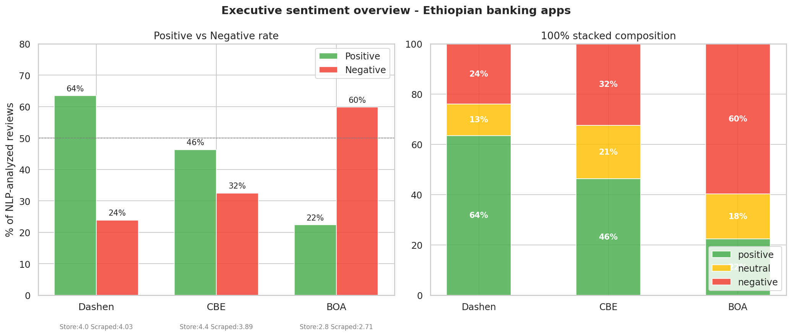
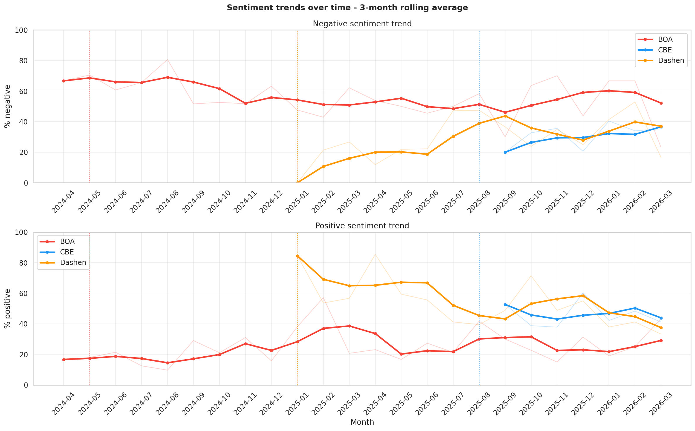
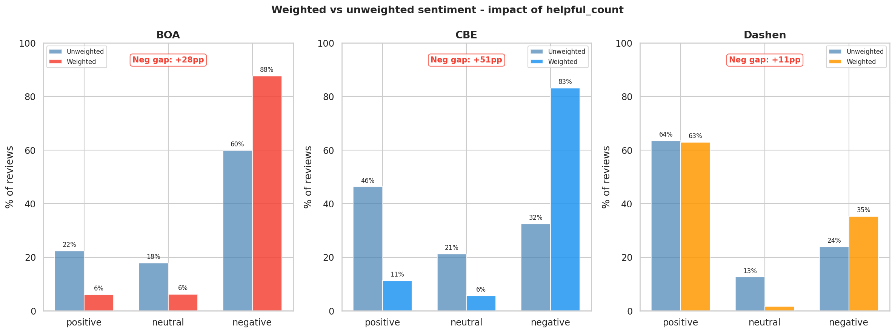
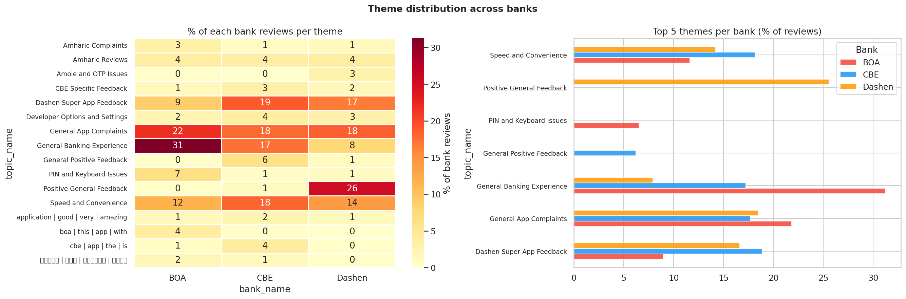
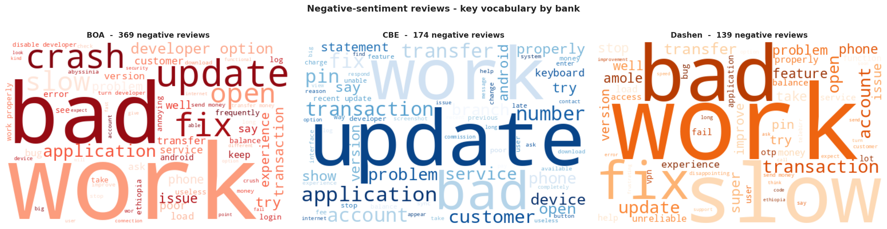

Business Context
Compared customer feedback for three Ethiopian mobile banking apps (CBE, BOA, Dashen) using publicly available Google Play reviews. The goal was to turn unstructured feedback into a clear, prioritized list of product issues and opportunities.
Tech Architecture
- Scraping: google-play-scraper
- Sentiment: RoBERTa (Twitter)
- Themes: BERTopic + HDBSCAN
- Database: DuckDB (OLAP Engine)
- Visuals: Seaborn & WordCloud
Core Findings
Project Methodology
01. Intelligent Data Collection
Implemented a high-performance scraping pipeline using ThreadPoolExecutor
and exponential backoff retry logic. This reduced collection time by 3x while ensuring
dataset integrity across 2,282 verified reviews.
02. State-of-the-Art NLP Pipeline
Used RoBERTa-Twitter for sentiment classification because short app-store reviews tend to be informal and noisy (slang, typos, abbreviations) and the model handles that style well.
03. High-Performance Data Engineering
Architected a 3-table normalized schema in DuckDB. Leveraged advanced SQL Window Functions to compute 3-month rolling averages and weighted sentiment scores directly from the database.
Four Headline Findings
1. BOA's Structural Failure
23 months of consecutive majority-negative sentiment indicating deep technical issues.
2. CBE's Perception Gap
Negative reviews for CBE are 51pp more "helpful" than positive ones, signaling high agreement on pain points.
3. Dashen's Honeymoon Decay
Post-launch sentiment dropped 44pp over 12 months, highlighting a need for rapid maintenance.
4. Engagement Delta
Near-zero developer reply rates across all banks represent a massive missed opportunity for retention.
Visual Insights

Fig 1: Executive Sentiment Overview

Fig 2: 3-Month Rolling Trends

Fig 3: The helpful_count Gap

Fig 4: Pain Point Heatmap

Fig 5: Comparative Root Cause Wordclouds (Negative Sentiment)
Explore Full Analysis
Check out the full Jupyter Notebook and SQL report on GitHub.